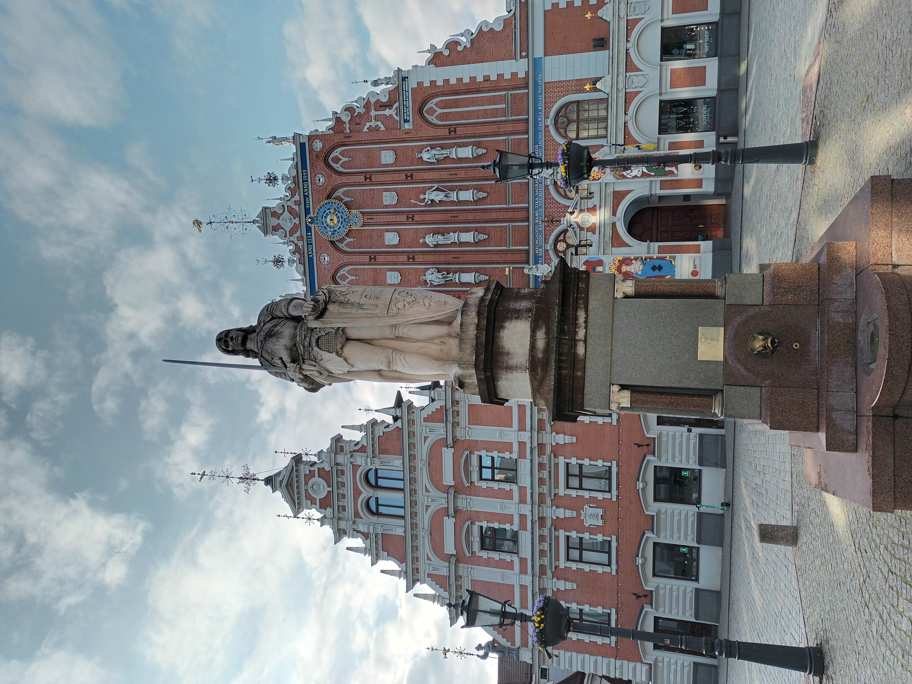
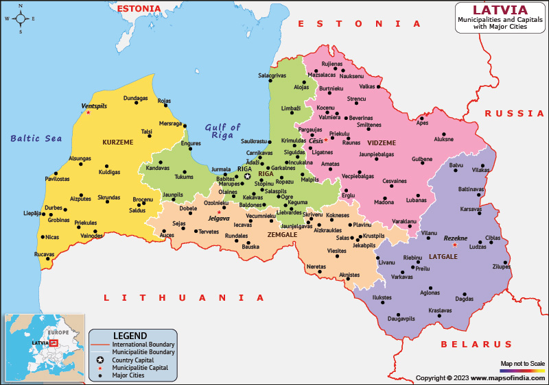

Tagasi

Läti (läti keeles Latvija, liivi keeles Lețmō, ametliku nimega Läti Vabariik (Latvijas Republika, Lețmō Vabāmō)) on riik Euroopas, üks kolmest Balti riigist.
Asustatud: 18. novembril 1918
Pealinn-Riia
Keel -- Läti keel
Rahva arv -- 58 850 717
Linnad mida olen külastanud: Riia, Cesis, Sigulda, Aluksne, Jurmala
Mida olen saavutanud selle reismisega:
Ajalugu õppinud:✅
Kohaliku toitu proovinud:❌
Kohaliku elamust proovinud:❌
